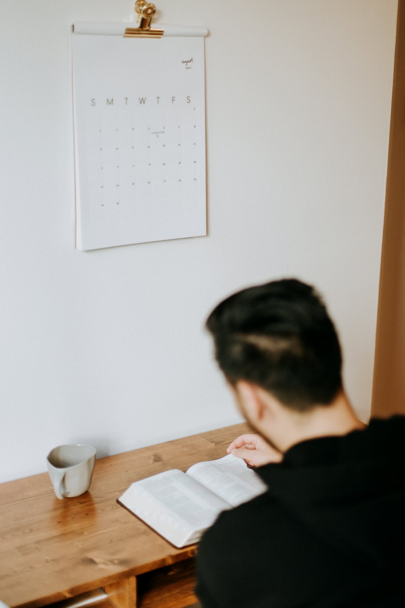

学ぶ
お金の基礎知識から。「わからない」を「わかる」に変える土台づくりから始めます。
大切なのは、その先。基礎知識から長期の資産形成を乗りこなすまで、一生涯つづく伴走で、あなたのお金と人生に寄り添います。
お客さまにとって一番良い方法は、時代とともに変わっていくもの。だからこそ、常にベストを追求し続けます。そして始めたあとが本番。伴走型のサポートで、長期にわたってサポートします。
お金の相談の延長で、生き方や稼ぎ方の話になることもよくあります。そんなときも、遠慮なくお話しください。

代表自身、かつては知識がないまま金融詐欺に何度も遭いました。だからこそ、専門用語を並べる講義ではなく、「わからない」からの出発をいちばん大切にしています。
良し悪しを測る物差しさえ持てれば、判断はご自身でできるようになります。そこまでご一緒するのが、私たちの役割です。
はじめての方も、着実に。学びから伴走まで、4つのステップでご一緒します。
お金の基礎知識から。「わからない」を「わかる」に変える土台づくりから始めます。
あなたにとって今ベストな方法は何か。一緒に考え、納得のいく選択肢を見つけます。
安心して第一歩を。無理のないペースで、長期の資産形成をスタートします。
ここからが本番。生涯にわたって、あなたの資産と人生に寄り添い続けます。
一度きりのアドバイスではありません。日々の暮らしに学びを織り込む、継続のサポートです。
「これってどうなの？」という疑問に、その都度お答えします。聞ける相手がいる安心を。
「この動画を見ておくといいよ」など、役立つ情報を厳選してお届け。
気軽に相談できる距離感で。日常的にやりとりし、いつでも伴走します。
投資やお金の話題を毎日配信。学びを続けやすい、日常の発信です。
家族にも友人にも切り出しにくいテーマだからこそ、気軽に聞ける距離感を保ちます。「こんなこと聞いていいのかな」を、なくすところから。
「せっかくお繋ぎするなら」——伴走サポートそのものに費用はいただいていません。株式会社知上会の運営は、さまざまなご縁をお繋ぎするなかで成り立っています。だから、あなたに寄り添うことに、遠慮はいりません。
お伝えする情報や案件も、その多くが無料のもの。あくまで「あなたにとってベストなもの」を基準にご案内します。
※具体的な条件は、ご相談時にご案内します。
セミナーと、継続的な個別相談は有料です。
無料のアドバイスは、受け取る側もつい聞き流してしまうもの。お互いが本気で向き合うために、いただくべきものはきちんといただく——それが、あなたの資産形成に責任を持つということだと考えています。料金は内容に応じてご案内します。
できることをお伝えするのと同じくらい、しないことをお伝えするのが大切だと考えています。
基準は「その方にとってベストかどうか」だけです。合わないと感じたときは、理由と共にその気持ちを率直にお伝えします。またお金以外の相談で範疇外の内容については他の専門家をご紹介することもあります。
ご相談いただいたからといって、何かを契約していただく必要はありません。ご希望があれば、ご連絡の頻度もいつでも調整します。
投資には価格変動などのリスクがあり、元本が保証されるものではありません。判断の材料をすべてお渡ししたうえで、最後の選択はご自身に。いずれご自身の力で判断できるようになることが、私たちの目標です。
一人ひとりに合わせた対話を大切にするため、まずはオンライン面談から。あなたの状況をうかがったうえで、最適な学びの場をご案内します。
セミナーは有料で開催しています。料金は面談時にご案内します。
まずはオンラインで顔合わせ。お互いを知るところから始めます。
状況や目標にぴったりの内容へ。一人ひとりに寄り添った対話を。
安心できる関係のなかで、深い学びと実践へ進みます。
日々の伴走・連絡、質問への回答、初回のご相談は無料です。一方で、セミナーと継続的な個別相談は有料でご提供しています。また、株式会社知上会の運営は、さまざまなご縁をお繋ぎするなかでも成り立っています。無料・有料にかかわらず、基準はいつも「その方にとってベストかどうか」だけです。
勧誘はいたしません。お話をうかがったうえで合わないと判断すれば、理由とともに率直にお伝えします。ご相談いただいたからといって、何かを契約していただく必要はありません。
まったく問題ありません。代表自身、かつては知識がないまま金融詐欺に何度も遭いました。だからこそ「わからない」からの出発を、いちばん大切にしています。
期限はありません。むしろ目指しているのは、いずれ私たちがいなくてもご自身で判断し、歩いていけるようになることです。そのうえで、必要なときにはいつでも戻ってこられる場所であり続けます。
どんな状況の方かがわからないまま一般論をお話ししても、お役に立てないからです。まず一度お顔を合わせて、あなたに合った内容をご用意するための時間をいただいています。
来ません。契約を迫るような連絡はしません。ご希望があれば、連絡の頻度もいつでも調整します。